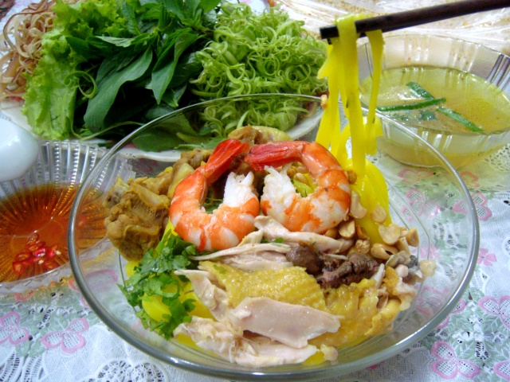

-
Mì Quảng Đà Nẵng
Nhắc đến Quảng Nam Đà Nẵng, chắc hẳn không ai trong các bạn không nghĩ ngay đến mì Quảng, món ăn đặc sản nổi danh của vùng đất này.
Mì Quảng không giống phở Bắc, cũng chẳng giống bún bò Huế hay bún Ốc Hà Nội. Mì Quảng có nhìu loại khác nhau, nào là mì gà, mì tôm, mì thịt, mì trứng, mì bò, mì sứa, mì cá lóc… nhưng hương vị đặc trưng của nó thì không lẫn vào đâu được. Hòa quyện cùng cọng mi trắng ngà, mềm mại là vị thanh ngọt và béo của nước hầm xương, mà người dân địa phương vẫn hay gọi là nước lèo.
Theo kinh nghiệm của người xưa, ăn mì Quảng phải ăn kèm với nhiều rau sống mới ngon. Nhưng rau sống đúng kiểu mì Quảng phải được kết hợp từ 9 loại rau như: cải non mới nụ, xà lách tươi, húng, quế, giá trắng có thể được trụng chín hoặc để sống, rau răm, ngò rí với hành hoa thái nhỏ…trộn lẫn với chuối bắp sắt mỏng, tất cả trộn lẫn tạo nên mùi vị đậm đà khó quên.
Đặc biệt thành phần không thể thiếu của mì Quảng là đậu phụng rang và bánh tráng mè nướng giòn. Vị thơm của đậu phụng rang và giòn của bành tráng sẽ làm tăng thêm ý vị cho món ăn đặc sản này.
Nhìn tô mì bốc khói với những chú tôm tươi đỏ mọng, lòng đỏ trứng vàng ươm kết hợp với màu xanh tươi mát của rau sống và hành hoa quả thật thực khách không thể kiềm nổi cơn đói đang trào dâng.
Dường như mì Quảng luôn có mặt trong mỗi bữa ăn hằng ngày của người dân nơi đây như là một thói quen, như thứ đặc sản dùng để tiếp đãi khách, bạn bè phương xa. Chính điều này cũng như một nét hấp dẫn riêng níu chân du khách mỗi khi có dịp ghé thăm mảnh đất thân thương này.
Các quán Mì Quảng ở Đà Nẵng
1.Mì Xứ Quảng
- Đia chỉ: 2 Phan Đăng Lưu, Quận Hải Châu, Đà Nẵng
- Điện thoại: 0935 429 427 - 0938 552 577
2. Mì quảng số 01A Hải phòng
- Địa chỉ: 1 Hải Phòng, Quận Hải Châu, Đà Nẵng
- Điện thoại: 0935 429 427 - 0938 552 577